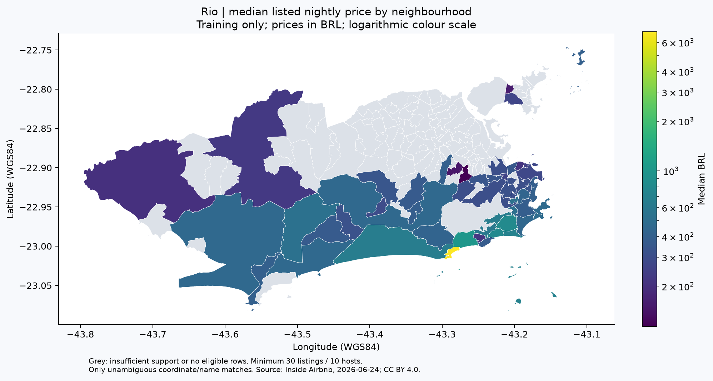

Machine Learning geoespacial · Rio de Janeiro
Características e localização ajudam a estimar preços anunciados no Airbnb?
O estudo separa anfitriões entre treino e avaliação, compara baselines com quatro candidatos de ML e examina o comportamento geográfico. O modelo final e sua interface de inferência estão congelados.
R$ 482,67MAE final vs. R$ 620,57 do baseline por tipo · 22,22% menor
O resultado descreve preços anunciados em um snapshot do Rio. Não demonstra valor de transação, preço futuro ou adequação à produção.
